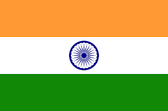
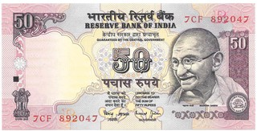
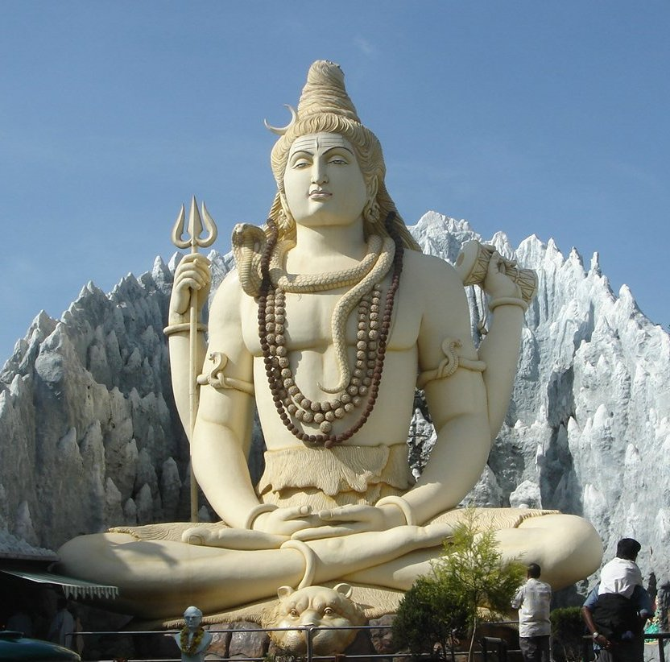
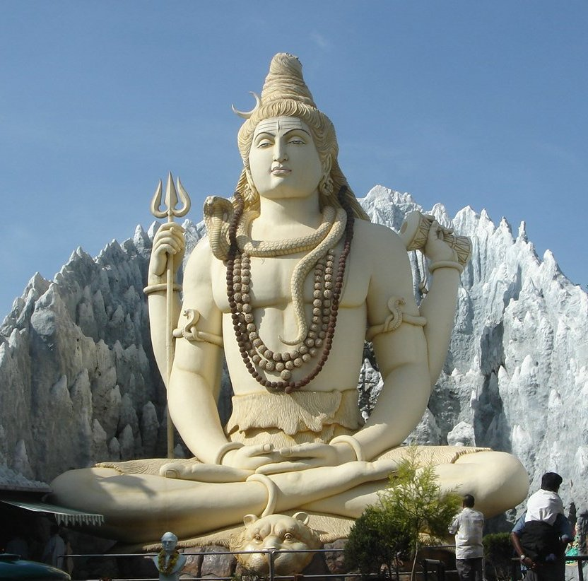
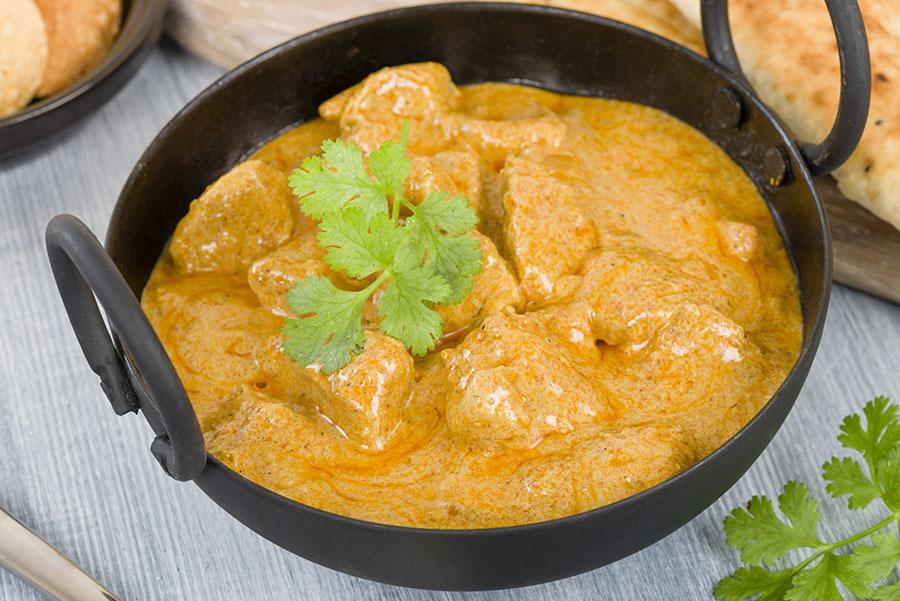
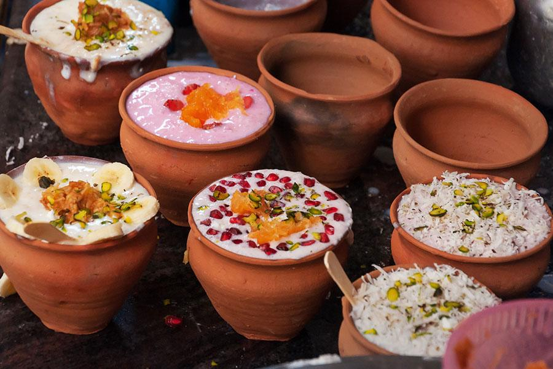
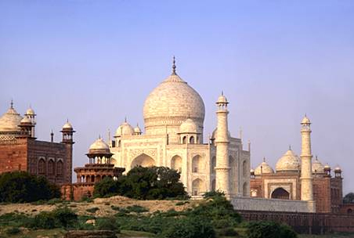
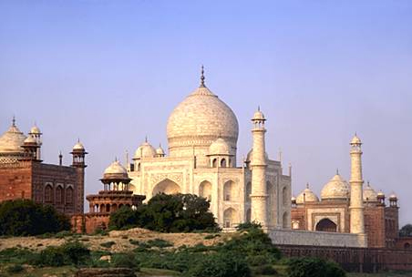

CONOCE
LA INDIA
LA INDIA
Conoce un poco más a cerca de India.....
Un país lleno de historia y cultura

LOCALIDAD
La India oficialmente República de la India es un país de Asia del Sur con un terreno diverso que abarca desde las cumbres del Himalaya hasta la costa del océano Índico. Tiene una historia de más de 5 milenios. Con sus más de 1409 millones de habitantes, el segundo país del mundo por población.
La India oficialmente República de la India es un país de Asia del Sur con un terreno diverso que abarca desde las cumbres del Himalaya hasta la costa del océano Índico. Tiene una historia de más de 5 milenios. Con sus más de 1409 millones de habitantes, el segundo país del mundo por población.
Moneda Oficial:
Rupia india
(₹, INR).
(₹, INR).
RELIGIÓN
La India es el lugar de nacimiento de las llamadas religiones Dhármicas:

La India es el lugar de nacimiento de las llamadas religiones Dhármicas:
- Hiduismo
- Budismo
- Jainismo
- Sijismo

GASTRONOMÍA
LaLa mayoría de los sabores de la India están muy relacionados por el uso significativo de especias, y una gran variedad de verduras. Los ingredientes más importantes empleados en la cocina india son el arroz, atta, y al menos cinco docenas de variedades de legumbres. La más importante es la chana, así como el toor, el urad y el mung. El vanaspati y el ghee son utilizados para cocinar. Los condimentos más importantes empleados en la cocina de la India son el Chile, la semilla mostaza negra denominada rai, comino, Cúrcuma, Alholva, Jengibre, coriandro o cilantro y asafétida (hing), en ocasiones el azafrán.
LaLa mayoría de los sabores de la India están muy relacionados por el uso significativo de especias, y una gran variedad de verduras. Los ingredientes más importantes empleados en la cocina india son el arroz, atta, y al menos cinco docenas de variedades de legumbres. La más importante es la chana, así como el toor, el urad y el mung. El vanaspati y el ghee son utilizados para cocinar. Los condimentos más importantes empleados en la cocina de la India son el Chile, la semilla mostaza negra denominada rai, comino, Cúrcuma, Alholva, Jengibre, coriandro o cilantro y asafétida (hing), en ocasiones el azafrán.
8 Platillos típicos
- Curry
- Pollo ‘tandoori’
- ‘Lassi’
- ‘Biryani’
- ‘Rajma’
- Dal
- ‘Chole bhature’
- Samosas y ‘kati roll’

ARQUITECTURA
Taj Mahal, situado en Agra, es el más famoso de todos los edificios antiguos de la India, y uno de los monumentos más emblemáticos del arte mogol. Se construyó como mausoleo para Arjumand Banu Begam, esposa favorita de Sha Jahan.

Taj Mahal, situado en Agra, es el más famoso de todos los edificios antiguos de la India, y uno de los monumentos más emblemáticos del arte mogol. Se construyó como mausoleo para Arjumand Banu Begam, esposa favorita de Sha Jahan.

LENGUAJE
Idiomas oficiales:
Hablados:
भारत गणराज्य Bhārat Gaṇarājya
(India en Hindi)
Idiomas oficiales:
- Hindi
- Inglés
Hablados:
- Lenguas de La India
भारत गणराज्य Bhārat Gaṇarājya
(India en Hindi)
POLÍTICA
India es una república democrática parlamentaria de corte federal con una clara separación de poderes. El presidente, elegido de mane- ra indirecta, es jefe del Estado. El primer ministro debe gozar de la confianza de la cámara baja y dirige el ejecutivo.
India es una república democrática parlamentaria de corte federal con una clara separación de poderes. El presidente, elegido de mane- ra indirecta, es jefe del Estado. El primer ministro debe gozar de la confianza de la cámara baja y dirige el ejecutivo.
DESTINOS POPULARES
EN INDIA
EN INDIA
- Jaipur
- Bombay
- Delhi
- Goa
- Udaipur
- Benarés
- Nueva Delhi
- Manali
- Munnar
- Jodhpur

ALGUNOS DATOS EXTRA SOBRE LA INDIA
- La vaca es un animal sagrado en la India así que está prohibido sacrificarlas. Muchas veces, viven libremente por todo el país, incluso por las ciudades, y es frecuente encontrártelas en todos sitios, incluso en las estaciones de tren.
- El río Ganges es un río considerado sagrado, y, si vas, por ejemplo, a la ciudad de Varanasi verás como queman a sus fallecidos en las orillas del río. Después tiran las cenizas, o lo que quede del cuerpo, al río.
- Es uno de los lugares donde mayor número de elefantes se concentra de todo el mundo. Por este motivo, muchas de las familias dedicadas a estos nobles animales derivan su actividad a sus hijos, quienes se convertirán en mahouts, o cuidadores de elefantes. El mahout cuida del elefante desde que el animal es pequeño, a fin de que éste se acostumbre a su dueño.
Todos los derechos reservados Andrea Ramos Barraza 2021©